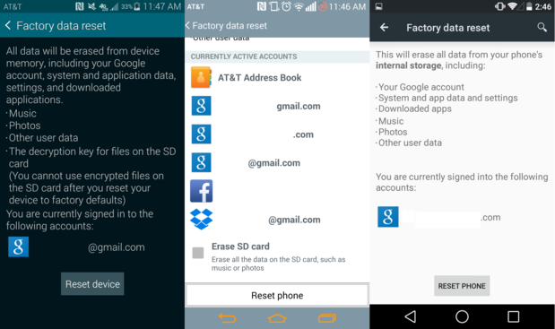

If you're looking to get rid of your Android phone, or just start with a clean slate, you'll want to perform what is called a "factory reset". It's so-called because it restores your phone to the state it was in when it left the factory; it's a "fresh from the box" software reset. As with every other smartphone operating system, Android gives you the option to wipe your phone or tablet within the settings menu.
If you're just wiping your phone just to start over from scratch, be sure to backup the data and content that's important to you. You can find a great list of backup options right here.
Find the Backup And Reset option
Some phone makers offer their very own backup services, so you may find an extra option or two in this menu. At the very bottom of this menu is where you'll find the reset option. Tapping on this option will detail the actions that will be performed, which include deleting all data from the device.

If your smartphone or tablet has expandable storage, the menu may ask if you'd like to wipe the external memory card. This completely up to you, but is completely unnecessary to the wiping process. After pressing the Reset phone or Reset device, the phone will reboot into Recovery mode and begin to wipe the phone or tablet.
After the phone reboots, it will be returned to its factory conditions and ready for you to set it up again, or give it to a new user.